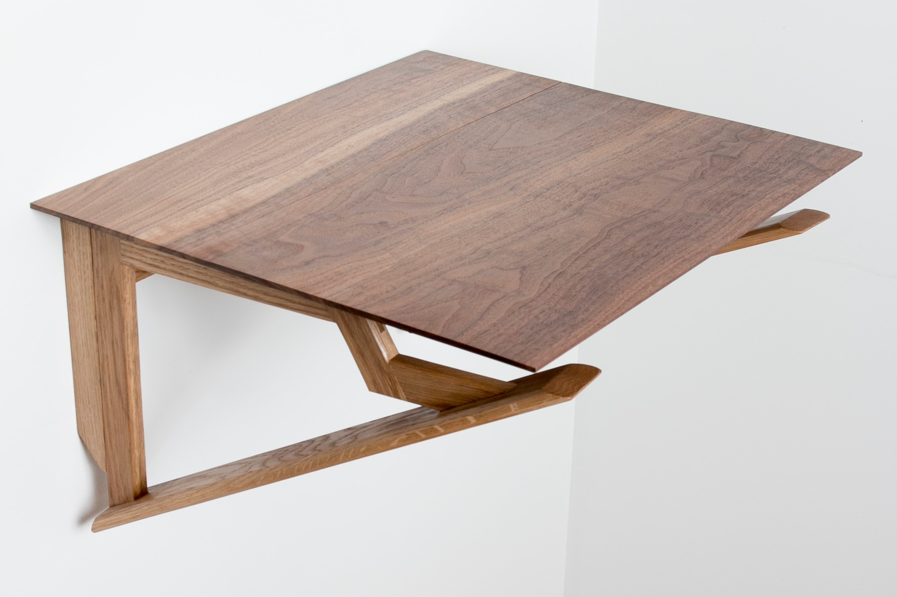
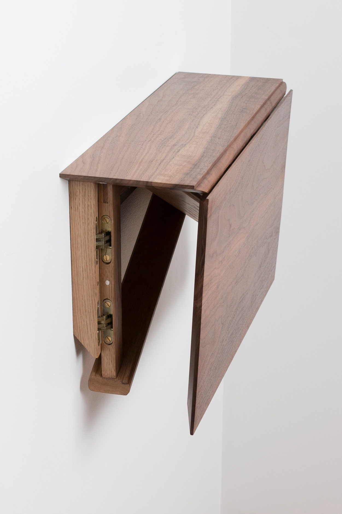
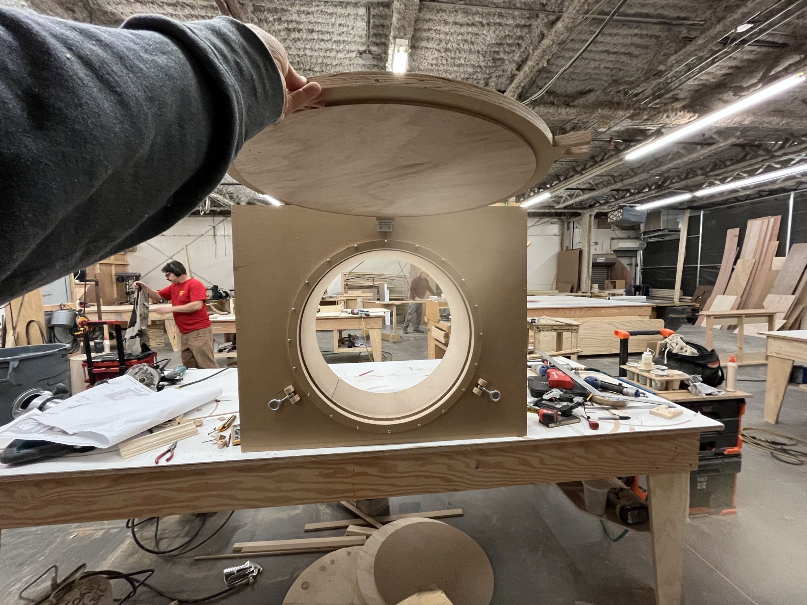
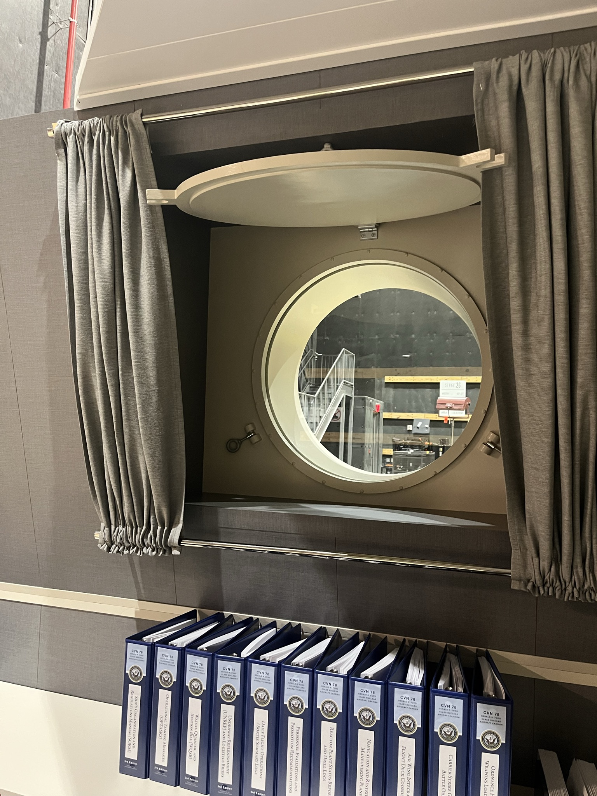
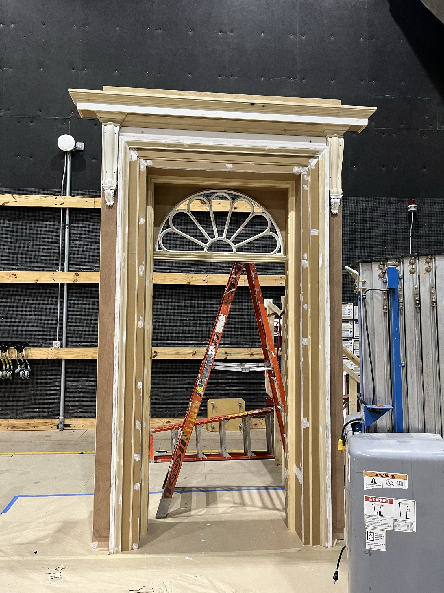

Dice Rolling Box
A hexagonal dice rolling box designed and crafted from cherry with walnut splines.
Fine woodworking and film set construction.


A wall-mounted table designed and crafted from scratch, featuring a walnut top and white oak base. The angular bracket geometry is both structural and sculptural.
A hexagonal dice rolling box designed and crafted from cherry with walnut splines.

A shaker side table built from maple with walnut accent strips in the top. Features a hand-cut dovetailed drawer and tapered legs.


The Diplomat — Season 4
A functional porthole unit crafted in the shop and installed into a set wall, complete with hinged lid and surrounding trim.

The Diplomat — Season 4
A grand entryway built on stage, featuring a semi-circular fanlight transom, decorative pilasters, and an ornate cornice.